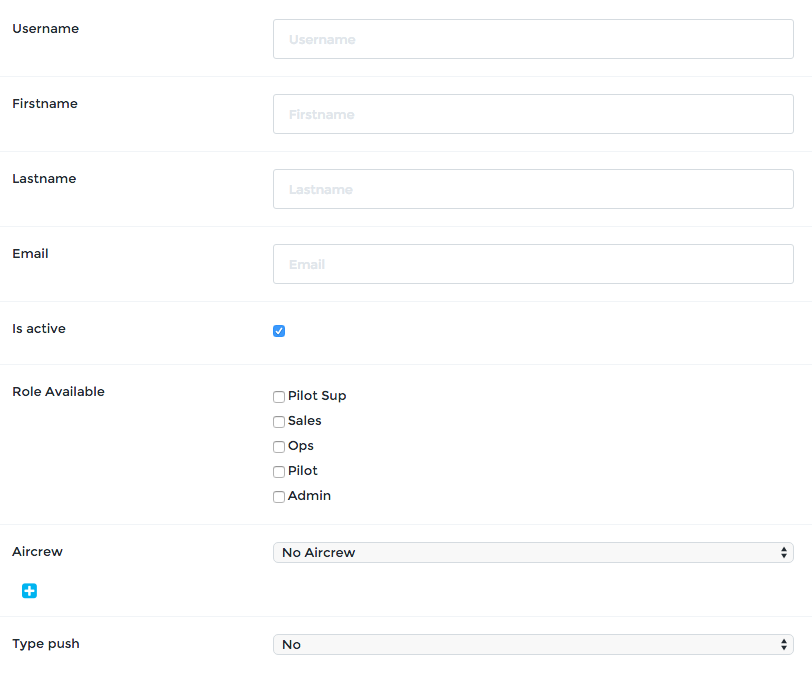

Manage Users¶
User management is accessible through the menu User > User list. The right to manage users is by default granted to the Admin role. Remember: this can be changed as you prefer, contact support@openjet.com for any changes related to roles and rights.
To view and edit an existing user, click on . To create a new user, click Add New. The form for creating or editing a user are the same, except for the passwords fields.
Create a User¶
Fill out all the fields in the form. We recommend to use the Email as username.
Check Is active to activate this user access.
If the user is to be linked to an existing aircrew, select the aircrew in the list.
Select Mail for the Type push field.
Choose a password and submit. The user is now created and active.
Desactivate a user¶
To deactivate a user, just un-click Is active. The access for the user is then suspended.